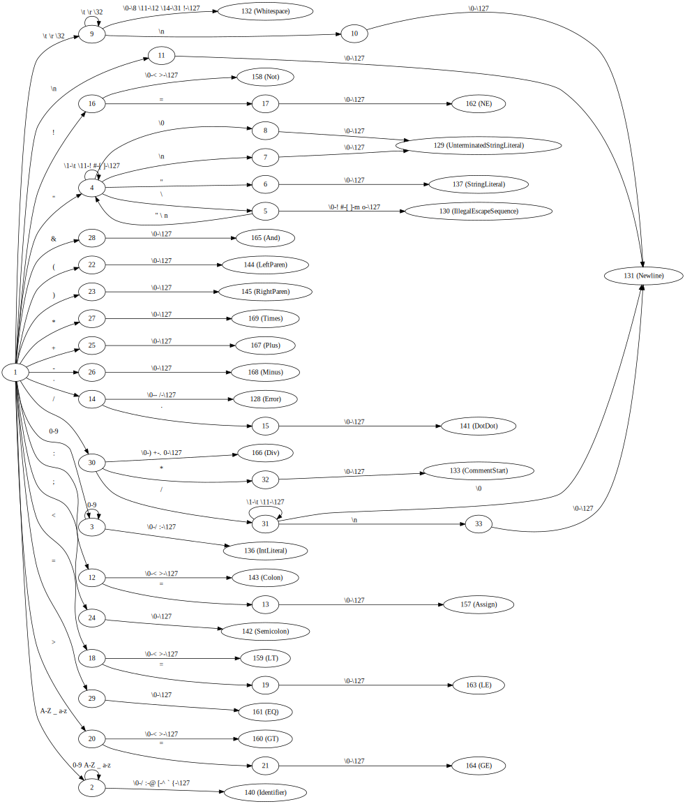
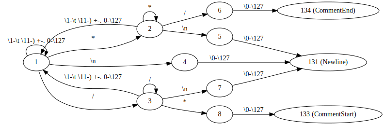
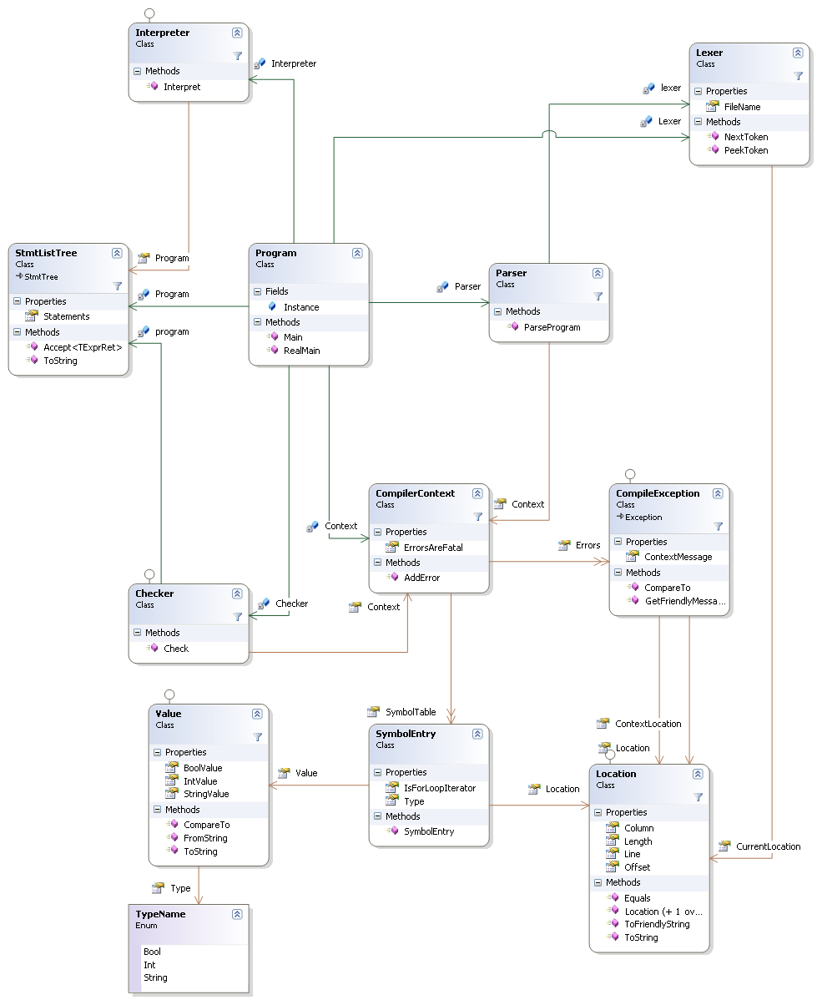
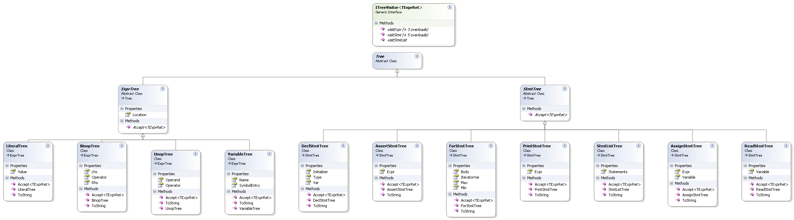

MiniLang: Compilers Spring 2012 - MiniPL interpreter - Tuomas Tynkkynen
Introduction
MiniLang implements an interpreter for a superset of the MiniPL programming language.
MiniLang supports the following additions to the MiniPL language:
- The missing comparison operators '<', '<=', '>=', '!=' and an unary '-' operator
- Boolean literals 'true' and 'false'
- Operator precedences according to the following table:
| Name | Operators | Associativity |
|---|
| Unary minus, Logical NOT | - ! | Right |
| Multiplication, division | * / | Left |
| Addition, subtraction | + - | Left |
| Comparison | < > <= >= | Nonassociative |
| Equality | = != | Nonassociative |
| Logical AND | & | Left |
Usage
Building
Use Visual Studio to build the project. For some stupid reason, the unit tests don't seem to work if the project is on the Linux network share in department machines, see
here.
Running
Run MiniLang <codefile.mpl> to execute a file,
or MiniLang -e <code> to evaluate code from the command line.
Make sure to quote the parameters properly, this depends on your shell.
Testing process
Majority of testing is done with Visual Studio unit tests, which are contained in the Tests subproject.
Code file test cases
The Tests\DriverTests folder contains some testcases as .mpl files, as well as files with .in, .out, and .err extensions.
The DriverTest test class executes each .mpl file, with the optional .in file as the standard input for the MiniPL program.
After executing, the standard output (where 'print' statements print) and standard error (where compile and runtime errors go) are compared with the .out and .err files.
Token language
Normal tokens: Note that Identifier will also match the reserved keywords.
Type of those tokens will be later changed to the appropriate keyword.
Keywords are the following: "var" | "for" | "end" | "in" | "do" | "read" | "print" | "int" | "string" | "bool" | "assert" | "true" | "false"
Also, each of the operators has it's own token type, but they are not listed separately for conciseness.
See the generated DFA for more detailed view.

CommentStart ::= /\*
StringLiteral ::= "([^"\\]|\\[\\"n])*"
IntLiteral ::= [0-9]+
Identifier ::= [a-zA-Z_][a-zA-Z_0-9]*
Operator ::= '+' | '-' | '*' | '/' | '<' | '<=' | '>' | '>=' | '!=' | '=' | '&' | '!' | ':=' | ':' | '..' | '(' | ')'
Also, there are Skip patterns, which are matched but ignored.
The Newline token has special handling in the lexer: when it is found, the line counter is incremented.
Newline ::= (//[^\n]\n) | ([ \t]*\n)
Whitespace ::= [ \t\r]+
CommentStart ::= /\*
When a Comment token is found, the Comment state is entered, and only the following patterns are then considered.
Every CommentStart and CommentEnd token found in this state will respectively increment and decrement the comment nesting counter.
When the counter reaches zero, the lexer enters its regular state again.
Regular expressions for these are complicated, so see the generated DFA for details.

CommentStart ::= anything that ends '/*', but does not contain a newline or '*/'
CommentEnd ::= anything than ends in '*/', but does not contain a newline or '/*'
Newline ::= anything than ends in a newline, but does not contain '*/' or '/*'
LL(1)-parseable syntax
program: statements
statements: stmt ';' (stmt ';')* // NEED PREDICT(stmt)
stmt: "var" Identifier ':' type (':=' expr)?
| "for" Identifier "in" expr ".." expr "do" stmts "end" "for"
| "read" Identifier
| "print" expr
| "assert" expr
| Identifier ':=' expr
type: "int"
| "string"
| "bool"
expr: logical_expr
logical_expr: cmp_expr ('&' cmp_expr)*
cmp_expr: rel_expr (cmpop rel_expr)*
cmpop: '=' | '!='
rel_expr: term_expr (relop term_expr)*
relop: '<' | '>' | '<=' | '>='
term_expr: factor_expr (termop factor_expr)*
termop: '+' | '-'
factor_expr: unary_expr (factorop unary_expr)*
factorop: '*' | '/'
unary_expr: unaryop* paren_expr
unaryop: '!' | '-'
paren_expr: '(' expr ')'
| Identifier
| literal
literal: IntLiteral | StringLiteral | "true" | "false"
Error handling strategies
Generic
Error handling is done with C# exceptions.
If some error is encountered during either parsing or semantic analysis, and the current method doesn't know how to handle it, a CompileException is thrown.
Then the callers of that method can catch the exception, save it to a list of errors, and keep going.
CompileException contains a diagnostic message, location of the error, and possibly an another location and message.
For example, if an already declared variable is redeclared, the CompileException will point to both the erroneous declaration and the original declaration.
Parse error recovery
The following cases are handled:
- An unrecognized or a non-ASCII character was found: cause a diagnostic, let the parser-level error recovery rules handle the case.
- A statement was parsed succesfully, but a statement starting keyword found instead of a semicolon: Show a diagnostic and pretend the semicolon was there.
- A statement was parsed succesfully, but the next token is not a semicolon or a statement starting keyword: Assume that there was an error in the middle of the statement/expression,
and that an incomplete statement was parsed instead. Throw away the current statement, and skip until next semicolon or statement starting keyword.
- Error while parsing a statement or expression: skip until next semicolon or statement starting keyword.
- Special checks to avoid 'unexpected end for' when the for-loop range expressions contain errors.
Program code documentation
The MiniLang solution contains the following Visual Studio projects:
- DfaGenerator
- The lexer is implemented with a table-driven DFA automaton.
The DfaGenerator project defines the token language with C# and generates the DFA tables for the actual lexer.
- Tests
- This project contains the unit tests for the interpreter.
- MiniLang
- This project contains the core of the interpreter.
MiniLang core classes

- TypeName
- An enum representing the types in MiniPL: Int, String and Bool
- Value
- A wrapper class that holds an MiniPL object (an int, string or a boolean)
- Program
- Contains the Main method, which handles the command line arguments, reads in the source files, runs the necessary phases, and displays any errors.
- CompileException
- An exception class that represents an error either during compilation or interpretation.
- CompilerContext
- Contains the symbol table and a list of handled errors encountered during compilation.
Lexer classes
- TokenType
- An enum containing all the token types, for example Plus for the operator '+', IntLiteral for an integer literal, etc...
- Location
- Contains a location of a token in source code: the line and column number.
- Token
- Represents one token returned by the lexer. A token contains its type, location, and the content as a string.
- Lexer
- Tokenizes the program source into tokens, using the DFA tables generated by the DfaGenerator
Parser classes
- Tree
- An abstract base class for AST nodes. Concrete subclasses of Tree should have an implementation of ToString(), which is used for visualizing the AST and in Parser's unit tests
- StmtTree and ExprTree
- abstract superclasses for AST nodes representing statements and expressions.
- ITreeVisitor
- An interface that allows the AST to be traversed with visitor pattern.
- Parser
- Parses the token stream generated by Lexer using a recursive-descent algorithm, and builds an AST.
Semantic checker classes
- Checker
- implements the ITreeVisitor interface, performs semantic checking by walking AST and collecting the resulting errors to a CompilerContext.
- SymbolEntry
- A symbol table entry. For every declared variable, an SymbolEntry is created and added to the symbol table. Holds the type of the variable, location of the declaration, and whether the symbol is currently a for-loop iterator variable.
Interpreter classes
- Interpreter
- implements ITreeVisitor, interprets the program by walking the tree
Tree classes
